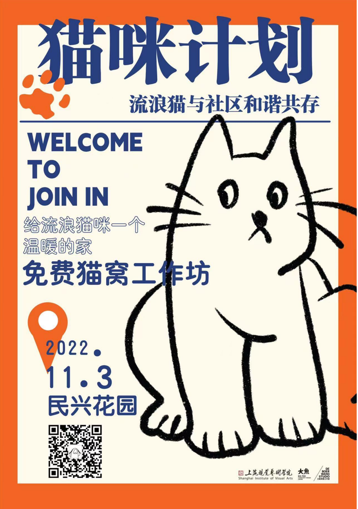
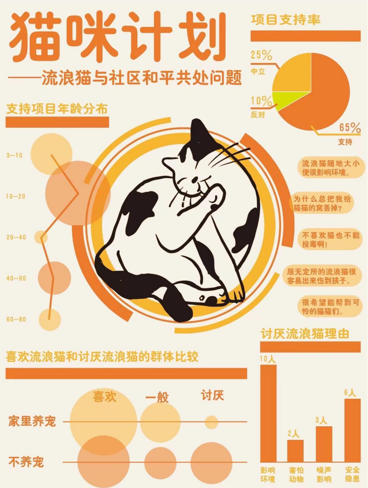
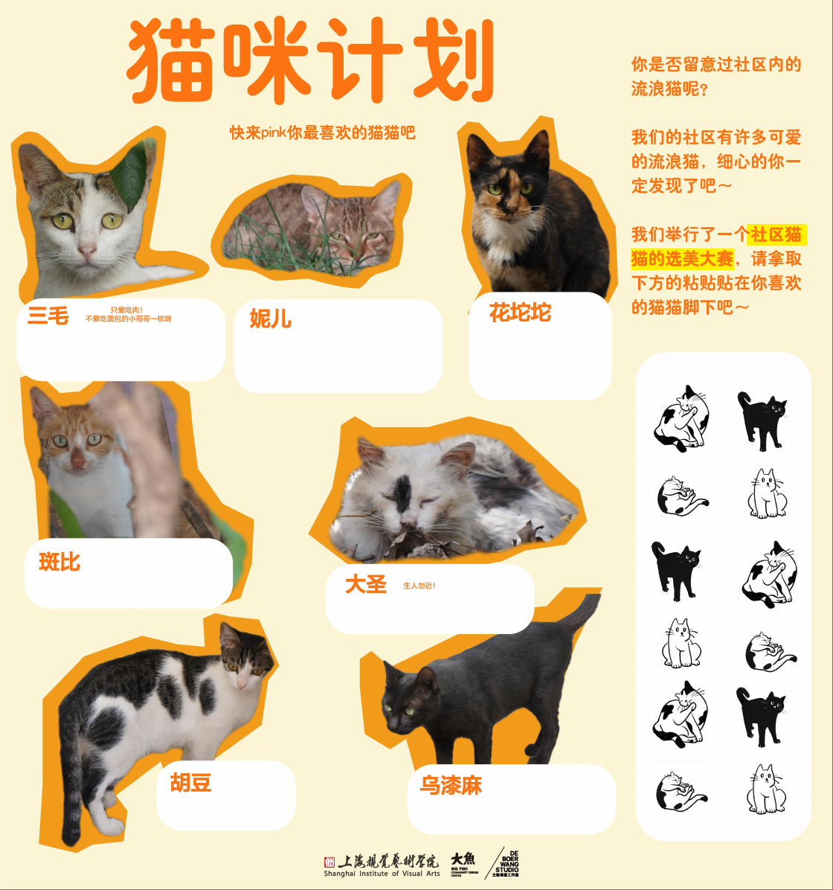
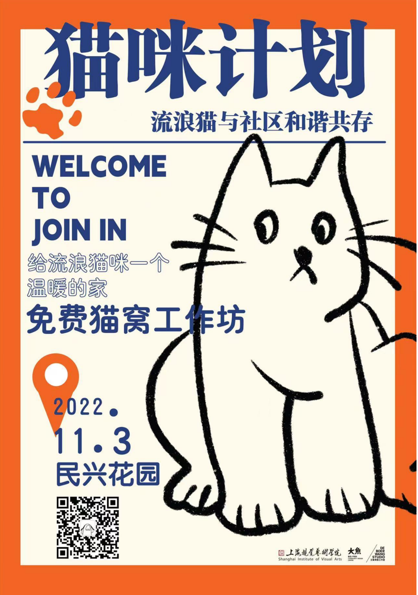
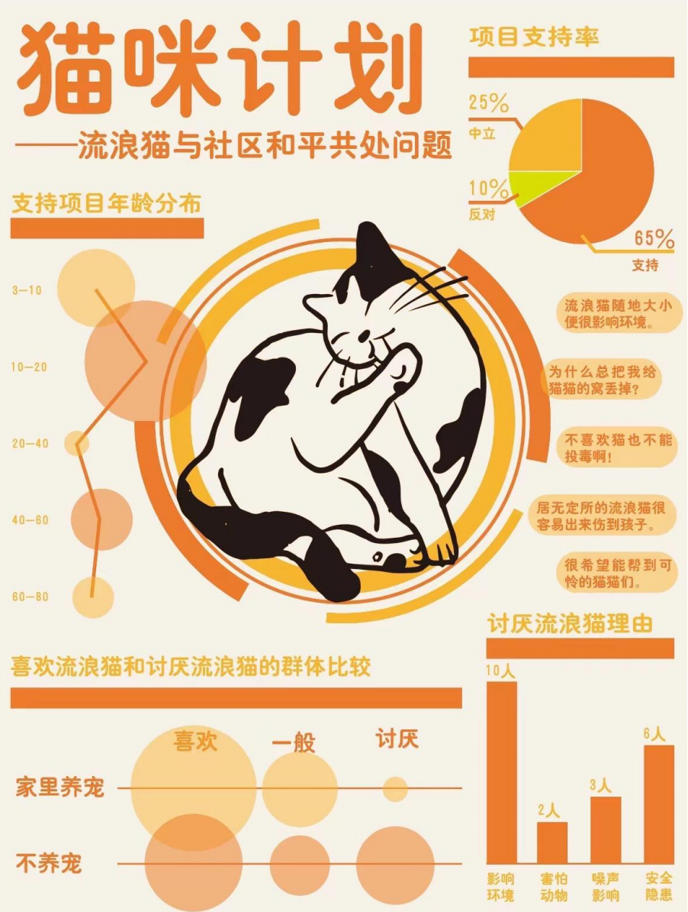
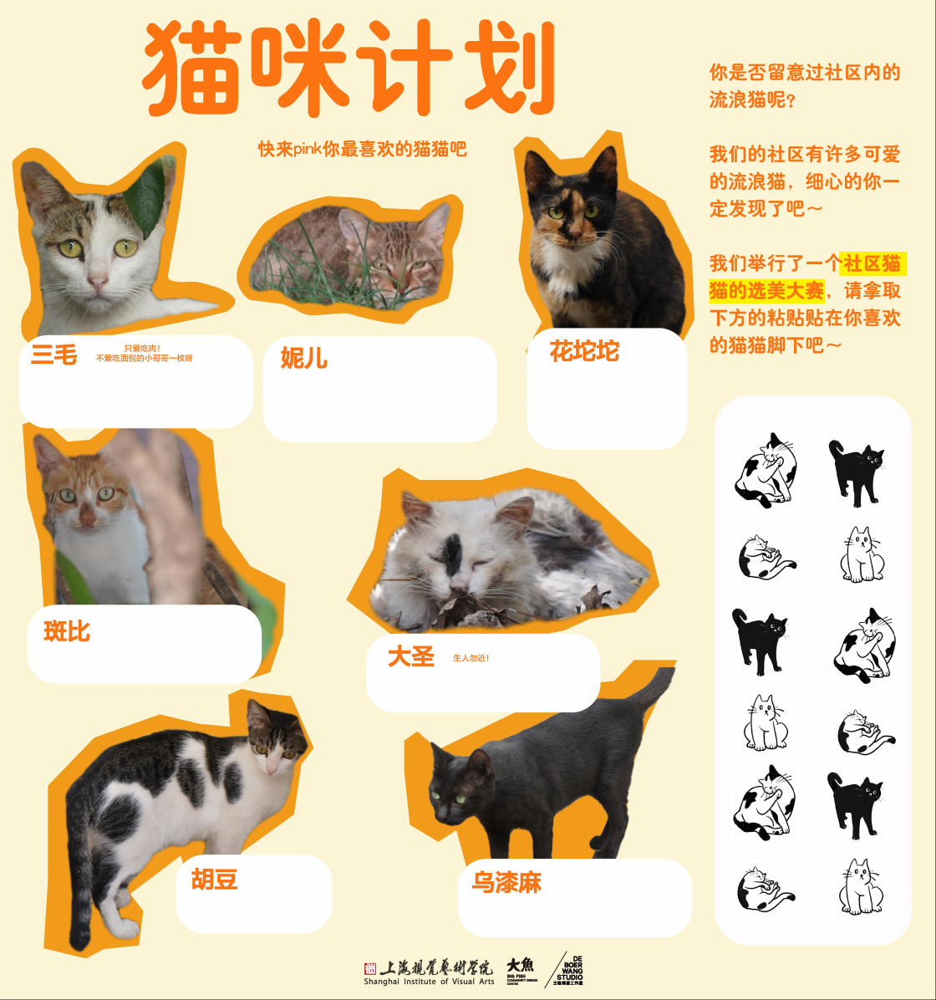

猫咪计划
2022


Conception
我们发现南龚社区有流浪猫与社区共存的问题。现阶段，居民们做法都不是有效的方式，来爱猫或者铲除。比如，无节制喂养现象，对于爱猫人士来说，流浪猫自身有捕食能力，过度喂养会让猫咪依赖人类生存，失去独立能力，使自身更加脆弱。对于希望社区更好的人来说，过量的食物会吸引更多外来流浪猫进入社区，造成社区安全卫生等问题。而不人道的捕杀，也不能解决社区内部有流浪猫的问题。研究表明，突发性社区猫群数量大量减少反而很快会被外部迁入的大量新流浪猫占领，寻求新的生态平衡，也会产生啮齿动物激增的问题。
所以，我们希望在南龚社区可以做一些活动和宣传，制作猫窝、绘制猫头、分发宣传卡片等活动。可以科普科学地治理社区流浪猫的方法，来帮助缓解这个看似不可调节的矛盾，助力南龚社区成为一个温暖有爱的社区。
项目海报
 




